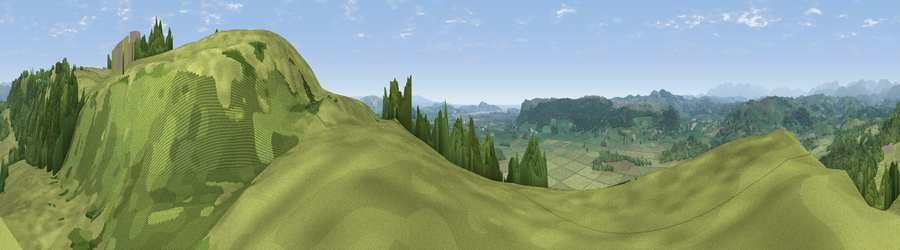

Viewpoint near Brigsteer
#6795 in England · top 30% of its area beats it · near Brigsteer · path 183 mWhere it is
The exact computed spot (SD 48375 89900). Click the marker for map links.
Public access: the nearest public right of way is about 183 m away — the final stretch may cross private land. Computed from Natural England's CRoW access layer and OpenStreetMap rights of way — not the legal definitive map. Always verify locally.
The view, rendered

A 360° render of this exact spot computed from the terrain model, tree cover and land cover — summer colours, afternoon light, calibrated against photographs of famous viewpoints. Real trees, hedges and buildings will differ in detail.
The panorama
Grey silhouette: terrain skyline in each direction (720 bearings, Earth curvature and refraction included). Dashed green: skyline with trees (+15 m) and buildings (+8 m) as obstacles. Blue strip: how far the ground is visible on each bearing.
Where the view opens
Wedge length = distance to the farthest visible ground on that bearing (vegetation-aware). Rings at 10, 25 and 50 km.
What fills the view
58% grassland · 41% woodland ·
Angular shares of the visible panorama (visual magnitude), not map area. Landscape diversity 0.32 (0–1 Shannon).
Key numbers
More beautiful places nearby
The staircase of upgrades: each row has a higher view potential than everything closer. Driving times are estimates from straight-line distance, calibrated against real road routing — check an actual route before setting out.
| Place | Direction | Drive | Score |
|---|---|---|---|
| Viewpoint near Brigsteer | N · 2 km | ~5 min | 72.6 |
| Viewpoint near Mill Side | SSW · 5 km | ~12 min | 72.9 |
| Viewpoint near Meal Bank | NE · 8 km | ~16 min | 75.7 |
| Moor How | W · 9 km | ~17 min | 76.5 |
| Viewpoint near Finsthwaite | W · 9 km | ~18 min | 84.7 |
| Viewpoint near Finsthwaite | W · 9 km | ~18 min | 90.3 |
| The Knoll | S · 402 km | ~384 min | 91.0 |
54.30208, -2.79481 · source: screening · position refined by local search. Computed location — check access rights before visiting.